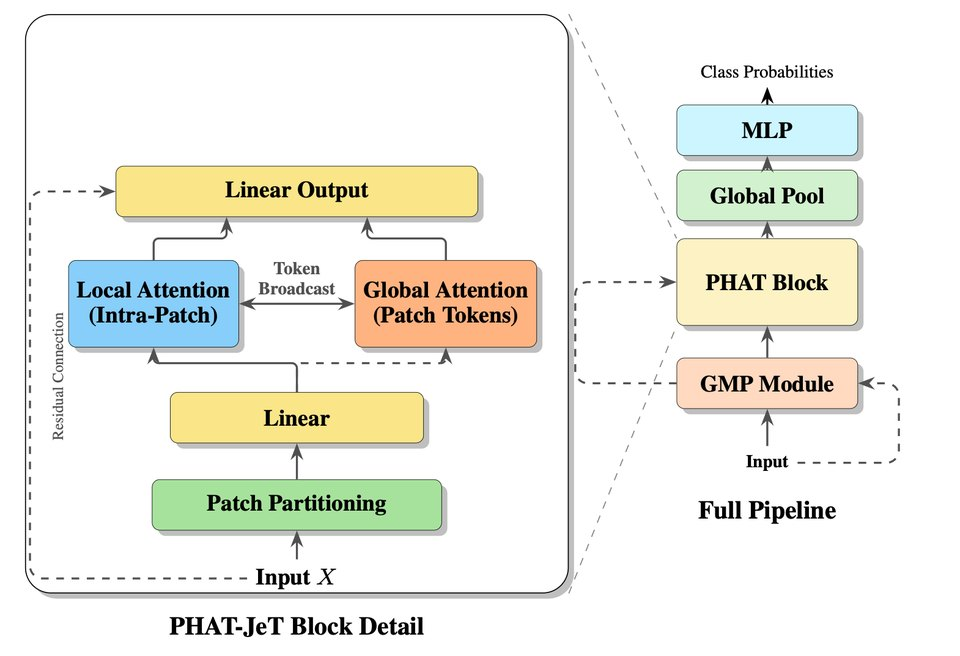

Patch Hierarchical Attention Transformer for Efficient Particle Jet Tagging
A transformer for the LHC trigger's compute budget. A geometric message-passing module encodes local detector structure; hierarchical patch attention computes exact attention within small particle groups and passes information between groups through lightweight patch tokens. State-of-the-art among resource-constrained taggers on four benchmarks.